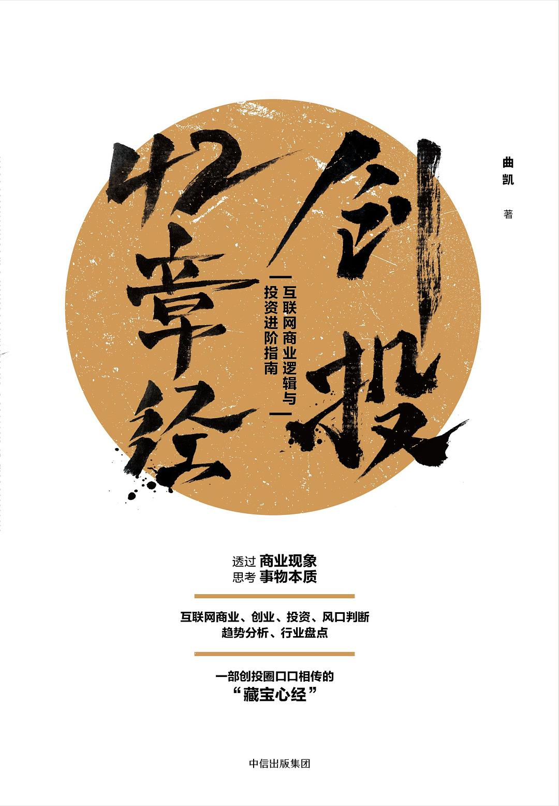

|  |
创投42章经：互联网商业逻辑与投资进阶指南
曲凯
|
推荐序 信号与噪声
序 “42章经”修炼手册
心法
01 两个问题，看透投资——“42章经”的投资方法论
02 怎样的创业公司才能突破重围
03 暗流涌动的互联网世界
04 为什么总是朱啸虎？—— VC的马太效应
05 一个王兴换三个陈欧，一个滴滴换十个小红书
06 外卖兴起、个护畅销、在线教育火热背后的“粮票效应”
07 解构和重组——商业世界的演进法则
08 人类不确定性法则
09 未经审视的人生不值得活
10 坐上火箭的人
内功
11 “早知道这些我的公司就不会死”系列（一）：CAC、LTV、PBP
12 “早知道这些我的公司就不会死”系列（二）：Cohort Analysis
13 “上万亿的市场，为啥投资人还是觉得小？”
14 “10天7个好友”怎样成为脸书增长到10亿用户的独门秘诀？
15 投资人口中的Unit Eco是什么？——学会用数学公式看透商业模式
16 跟高盛TMT业务负责人学分析
招式
17 社交三部曲（一）：社交媒体的本质
18 社交三部曲（二）：解密Snapchat
19 社交三部曲（三）：陌陌的本质
20 知乎的野心与终局
21 新零售的投资逻辑
22 一场关乎留存率的竞争——内容创业的商业本源
23 出行三部曲（一）：出行市场大混战
24 出行三部曲（二）：为什么停车场将消失？
25 出行三部曲（三）：滴滴的唯一出路
26 按月订购和无人货架的本质
27 “充电宝”的24字投资法则
28 今日头条的发家与困局
29 微信之战百度，擒头条
30 其实王兴和贝佐斯是同一类人
31 给共享经济判个死刑
32 复盘无人零售的三点心得
33 一个价值10亿美元的互联网消费品牌是怎样炼成的
34 2017年的5个小风口
35 我眼中的未来
江湖传奇
36 Hi，最近还好吗？
37 焦虑，迷茫，失望，自救的VC
38 博弈，抢夺，做市，闷声发财的FA
39 互联网折叠
40 七个新基金合伙人的闭门分享
41 为什么我不做VC了
42 陈悦天：关于VC该不该干的争论，我的一些经历和想法